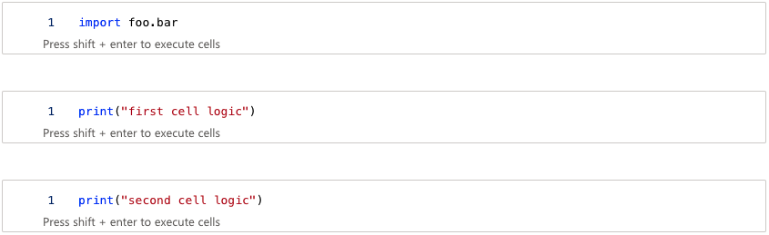
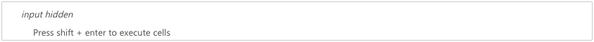
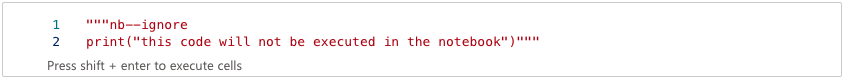
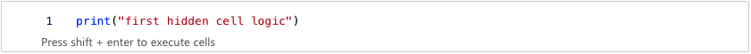
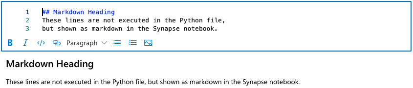
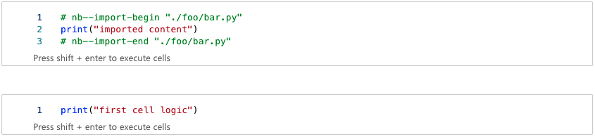

Usage
To convert a Python file to a valid Synapse notebook, the Python file can be augmented with different markers. If no marker is used, the content of the Python file is interpreted as a single code cell.
Defining Code Cells
Code cells are denoted by # nb--cell markers. All lines below the marker until the next marker are added to a code cell in the Synapse notebook. The lines above the fist marker are also added to a code cell.
import foo.bar
# nb--cell
print("first cell logic")
# nb--cell
print("second cell logic")
The simple example above results in the following notebook:

Exclude Lines
To exclude lines from beeing executed in the Synapse notebook, enclose them in an opening # nb--ignore-begin and closing # nb--ignore-end marker.
# nb--ignore-begin
print("this code will not be executed in the notebook")
# nb--ignore-end
Ignored code is added to the notebook as a hidden cell.

After showing the cell content we notice that the code is commented out so it will not be executed. Moreover it contains a nb--ignore marker for reverse conversion.

Hide Cells
If you want cells to be executed but remain hidden in the notebook at the same time, use the marker nb--hidden.
A hidden cell will be added to the notebook.
However, compared to an ignored cell, after showing the cell content we notice that the code is not commented out so it will be executed.

Markdown
Markdown is not executed in the Python file but should be shown as formatted text in the Synapse notebook. To define markdown cells, use a docsting comment with a nb--markdown marker.
"""nb--markdown
## Markdown Heading
These lines are not executed in the Python file,
but shown as markdown in the Synapse notebook.
"""
The simple example above results in the following markdown cell:

Include Files
By converting, the content of imported modules is included in the Synapse notebook (works only with full relative imports). When converting the notebook back to a Python file, relatively imported modules are also written.
# these imports are included in the notebook
from .some_module import *
from .some_package.some_module import *
from .some_package.some_sub_package.some_module import *
# these imports are not included in the notebook
from some_module import * # not relative
from .some_module import some_method # not full
from .some_module import SomeClass # not full
This example includes a file "example_5.py" that imports from the module "foo/bar.py".
The resulting cells contain nb--import-begin and nb--import-end markers for reverse conversion.
